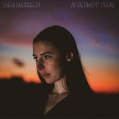

The 50 Best Albums of 2023
This is it! It's time to reveal our top albums of 2023. A longstanding tradition since 2002, our full list consists of 50 albums selected by the entire No Ripcord staff. But first...
If you'd like to hear four senior No Ripcord writers talking (and arguing) about the year's best new music, check out our latest Quarantine the Past podcast episode here:
Shameless plug over. Here No Ripcord's 50 Best Albums of 2023!
. . .
50. Paramore
This Is Why
(Atlantic)
On This is Why, Paramore fantastically melds their emo roots with post-punk textures and dance-punk vibes that will shoot through you like electricity. With razor-sharp riffs, huge choruses, and many delightfully unexted twists and turns, this is the sound of a band fearlessly operating at the height of its powers. - Joe Marvilli
49. 100 gecs
10,000 gecs
(Dog Show Records/Atlantic Records)
Utilizing pop music and pop culture influences like a raccoon rummaging through your trash at 3 am, Dylan Brady and Laura Les, against all odds, make hyper-pop Picassos out of rubbish on the backs of great hooks, cranked-up volume, frogs doing keg stands, and internet-fried joy. - Peter Quinton
48. Yazmin Lacey
Voice Notes
(Own Your Own Records)
Drawing on Brit-jazz, neo-soul, and R&B, Voice Notes is a true statement of a debut. Lacey's lyrics are relatable yet poetic: On first track Flylo Tweet, she sets a spoken word reflection on impostor syndrome to a thrilling collision of sounds, arguably creating the introductory vignette of the year. - Joe Rivers
47. Militarie Gun
Life Under the Gun
(Loma Vista)
Ian Shelton’s rugged vocals and sugary guitar melodies power the debut album from Militarie Gun, Life Under the Gun. It’s summarized in the opener, Do It Faster, with a brief mantra for the band: “I don’t care what you do/just do it faster.” - Ethan Beck
46. Sparklehorse
Bird Machine
(Anti)
Posthumous releases can seem exploitive, eerie, and sometimes even a little bit icky. Lovingly pieced together with care and respect by the late Mark Linkous’ brother Matt and sister-in-law Melissa, Bird Machine is an entirely different beast. A beautiful, magical, bittersweet testament to a truly special and sorely missed artist. - David Coleman
45. Spellling
SPELLLING & the Mystery School
(Sacred Bones)
SPELLLING, the pen name of art pop instrumentalist Chrystia Cabral, reconsidered her discography for SPELLLING & The Mystery School, selecting past songs that had undergone alteration via live performances, resulting in newly conceived arrangements for this recording. She improves upon her initial drafts, successfully challenging the concept of the covers album. - Sean Caldwell
44. Kara Jackson
Why Does The Earth Give Us People To Love?
(September)
Debuts like Kara Jackson’s don’t come along very often. The mix of musicality, hyper-observant lyrics (not surprising given her roots in poetry), and heart are a rare combination. Jackson pours it out on the title song, which she has been emotionally unable to play live, but also has compassion to spare on elevated tracks like lily or the hard-luck tale of rat. - Mark Moody
43. Bar Italia
Tracey Denim
(Matador)
Bar Italia’s insistence on insouciance may feel a bit overdone, perhaps— they sound like a black-and-white photo of a smoke-filled mid-century basement bar. But you have to admire their commitment to the bit. Fuzzy, washed-out, gritty—just don’t call them Britpop—they never meant to reference Pulp (and Jarvis Cocker’s dislike is mutual, apparently). - Gabbie Nirenburg
42. King Krule
Space Heavy
(Matador)
Dark and sonically cavernous, Archy Marshall's fourth release as King Krule plays with sparse rhythms that vacillate with tension and release. Offering existential musings while revisiting the experiences of fatherhood that he first explored in Man Alive!, Marshall lays bare where he stands as he approaches thirty years old. - Juan Edgardo Rodríguez
41. Skyzoo, the Other Guys
The Mind of a Saint
(First Generation Rich/HipNOTT)
In a pretty wild year for hip hop, The Mind of a Saint saw The Other Guys keeping it simple with a classy jazz-inflected boom-bap production style, providing the perfect backdrop for one of the finest MCs in the game to weave his magic. Superficially, it’s a satisfying listen, especially for 90s hip-hop heads; dig a little deeper, and it’s actually a high-end concept album. An underrated gem. - David Coleman
40. Jeff Rosenstock
Hellmode
(Polyvinyl)
HELLMODE is a classic mid-career pivot from one of our strongest punk-pop songwriters, Jeff Rosenstock. These songs are sparser and tighter than NO DREAM or Worry, but just as catchy and insightful, despite the seven-minute concluding cut, 3 Summers, a mini-epic that Rosenstock nails. - Ethan Beck
39. Yaeji
With A Hammer
(XL Recordings)
With a Hammer, Yaeji’s cyberpunk exploration of self, is a lesson in contrasts. American/Korean, frenetic/subdued, digital/orchestral, Yaeji layers every part of who she is into a sometimes chaotic, but never impenetrable, debut. It may not be surprising that she began as a club DJ, but her talents as a producer and musician have coalesced beautifully here. - Gabbie Nirenburg
38. Parannoul
After the Magic
(Parannoul/POCLANOS)
Parannoul’s music has always sounded as if it was yanked from its anonymous creator’s dreams, dreamy indie rock too huge and triumphant to exist from its modest means. But on After The Magic, the South Korean musician makes the jump from 2D to 3D with their most fully-realized world yet. Though the production has ramped up a bit, the album broods with lonely melancholy and starry-eyed wonder with high-definition magic. - Peter Quinton
37. Gabriels
Angels & Queens
(Atlas Artists/Gabriels LLC)
It’s too easy for soul records to fall victim to retro schtick, but on Angels & Queens (released in full in 2023 after the first half came out last year), Gabriels neatly sidestep that pitfall. What sets it apart is primarily the extraordinary vocals of Jacob Lusk, a former American Idol finalist whose rich, gospel-infused tones sound like both an exultant incantation and fire and brimstone at the same time. - Joe Rivers
36. Ratboys
The Window
(Topshelf)
Some dozen years into their journey, Chicago’s Ratboys uncork their greatest release yet. Working with an outside producer for the first time (Death Cab for Cutie’s Chris Walla), Julia Steiner’s songs sparkle even brighter in a more hands-on setting. It’s Alive and Empty steamroll their way along, while the extended jam of Black Earth, WI, or the more heartfelt title track showcase the quartet’s range. It's the type of album where any song could be argued is the best. - Mark Moody
35. BC Camplight
The Last Rotation of Earth
(Bella Union)
On The Last Rotation of Earth, BC Camplight tackles heartache with the kind of lush orchestration and theatricality rarely attempted in indie rock in the last decade. There is something refreshingly nostalgic about his storytelling, reminiscent of They Might Be Giants, Ben Folds Five, or The Magnetic Fields—nerdy bands gone by. Throw in a few ‘80s synths and the expansive feel of Brian Wilson’s songs, and you have a remarkably satisfying record. - Gabbie Nirenburg
34. Sarah Morrison
Attachment Figure
(Ramp Local)
Equally beguiling and challenging, Attachment Figure introduces Sarah Morrison's talent as a pop deconstructionist. The Tallahassee, Florida-based musician's playful vocals, malleable and penetrating, build off against dim-lit jazz arrangements and hazy soundscapes that move fluidly before veering in unexpected directions. Even though she keeps the mood lovingly tranquil, Morrison expresses herself forcefully and with little compromise—thoughtfully covering a wide array of topics such as hate crimes, technological adoption, and folk legends with fascinating results. - Juan Edgardo Rodríguez
33. Greg Mendez
Greg Mendez
(Forged Artifacts)
Revisiting Greg Mendez’s self-titled release some six months in continues to yield further discoveries. The breezily brisk nine-song album offers up Mendez’s flinchingly honest reflections (see Maria), but the most stunning takeaways come back to his ability to summon a melody or other jaw-dropping passage out of seemingly not much at all. The post-chorus blossoming of Clearer Picture (of You), for example, is a discovery to marvel at. - Mark Moody
32. Corrine Bailey Rae
Black Rainbows
(Black Rainbows Music/Thirty Tigers)
To most, Corinne Bailey Rae is still the woman behind the breezy Put Your Record On. Even though that was 17 years ago, artist evolutions rarely happen like this. She’s ditched the easy-listening soul that characterized much of her previous work and has tried her hand at whatever she can find. The end result is a musical grab-bag of indie sleaze, pop, and even riot grrrl that’s as thrilling as it is unexpected. - Joe Rivers
31. Diners
Domino
(Bar None)
The power pop album of 2023, Diners’ Domino is Blue Broderick’s all-killer-no-filler record. From the soaring chorus of lead single The Power to the touching ballad of Your Eyes Look Like Christmas, Broderick’s songs shine when paired with Mo Troper’s production, recalling classic bands like 20/20 or Shoes. - Ethan Beck
30. Water From Your Eyes
Everything's Crushed
(Matador)
No one wears weird quite as well as Water From Your Eyes’ Rachel Brown and Nate Amos. Their debut for Matador delivers the goods, or self-described product as it were. Amos’ patchwork collages find him looking for scraps of sound to plaster over the space between beats. The title song here is the best example, as it opens with a suspense-laden swirl, morphs into a sea of plucked strings, and ends up with a see-sawing of scraped electric guitar soloing. All the while, Brown intones mantras, both satirical and profound, nonplussed by the surroundings. - Mark Moody
29. Palehound
Eye on the Bat
(Polyvinyl)
Imagine Elliott Smith on electric guitar, a backing band, and an axe to grind, and you’ll start to approximate the sound of Palehound. El Kempner is making folk music for people who want to listen to rock’n’roll. Lyrically, they are battling relatable quotidian heartbreak (for example, My Evil is a simple masterpiece, a dark and twisty almost medieval-sounding ballad), but musically, they are staunchly rooted in ‘90s alt—Kempner’s saving grace from keeping them lumped in with the boygenius crew and their soundalikes. - Gabbie Nirenburg
28. L’Rain
I Killed Your Dog
(Mexican Summer)
Taja Cheek, the multi-instrumentalist behind L'Rain, isn't like many other experimental artists. While she's often bendy or cerebral in her approach, Cheek does bring a lot of humor and humanity to her terse arrangements. With a team of session musicians backing her vision, warming its icy textures and digitized beats, the amusingly titled I Killed Your Dog seldom repeats itself. The general mood is psychedelic and a little jazzy, but it's merely a foundation for Cheek to work around songs that run a gamut of emotions. The way she blurs the boundaries may defy easy categorization, but the end result is undeniably accessible. - Juan Edgardo Rodríguez
27. Yo La Tengo
This Stupid World
(Matador)
Yo La Tengo’s sharpest, sweetest record in years, This Stupid World captures some of the trio’s fuzziest songs in years. Ira Kaplan’s guitar freakouts are present on Fallout and Sinatra Drive Breakdown, along with the growling shuffle of the funny Tonight’s Episode. But it’s the quiet moments, like Georgia Hubley’s wonderful vocals on atmospheric Aselstine, that bring the album together. - Ethan Beck
 26. Jaimie Branch
26. Jaimie Branch
Fly or Die Fly or Die Fly or Die ((world war))
(International Anthem)
Jaimie Branch’s swan song was never intended to be such, and given its infectious swagger, it certainly doesn’t play out as a requiem. Branch left us just over a year prior to the album’s release, but from the opening notes, the trumpeter and vocalist’s breaths are vibrant ones. Extended tracks like borealis dancing give Branch and her combo plenty of room to stretch out. The nine-minute baba louie weaves the tropical rhythms of David Byrne’s Rei Momo through the celebratory march of New Orleans’ second-line processional. Evidencing further range, a renamed Meat Puppets’ cover, the mountain, showcases a looseness that makes the song’s original performers sound as tight as they come. A neat trick indeed. - Mark Moody
25. Miss Grit
Follow the Cyborg
(Mute)
Follow the Cyborg creates an entire world that you want to lose yourself in. Pulling from cyberpunk, anime, St. Vincent, and more, Miss Grit becomes the titular cyborg, chronicling their journey from creation to sentience. Through this odyssey, they keenly tackle everything from gender identity to online personas, and more. Over pulsing electronica that recalls the Nebuchadnezzar hovering towards Zion in The Matrix, Miss Grit welds guitar melodies ranging from slickly automated to wonderfully off-kilter. The touch point of the mechanical and organic is where their best work resides. You’ll keep returning to their world and be eager to see what they create next. - Joe Marvilli
24. Mandy, Indiana
I've Seen a Way
(Fire Talk)
Manchester’s finest Francophone noiseniks delivered one of the finest debuts of the year; a jarring, discordant slab of pure exhiliration. Like a cityscape dominated by imposing brutalist architecture (the cover art offers an appropriate nod to England’s brutal North), it isn’t beautiful in the classical sense. However, if you appreciate the style, it’s very quickly apparent that the quartet is onto something very special. Pinking Shears has an unconventional swagger; it’s practically dance music. Meanwhile, the cinematic Love Theme (4K VHS), awash with arpeggiated synths, seems destined to soundtrack some dystopian Euro flick. An idiosyncratic triumph. - David Coleman
23. Blondshell
Blondshell
(Partisan)
Halfway through Sober Together, Sabrina Teitelbaum sings out to her partner, “I wanna be there for you/But not in a way that lets you take me down with you.” That struggle between empathy and self-preservation permeates Blondshell’s self-titled album, along with a cathartic dose of anger. In one of the best debuts of the year, Teitelbaum takes on toxic men, heartache, substance abuse, and more with a burning fury and a sly wit. No one escapes her caustic spotlight, not even herself. And when these songs erupt in a mix of raging guitars, you’ll want to scream along with her over and over. - Joe Marvilli
22. Bully
Lucky for You
(Sub Pop)
2023 was so soaked with ‘90s alternative inspiration that it’s a little hard to wade through. After the third or fourth Veruca Salt copycat, how do you tell the difference, let alone sort the good from the mediocre? With a voice that lands somewhere between Courtney Love and Melissa Etheridge, and a knack for churning out fiery grunge numbers as hooky as pop songs, Alicia Bognanno sets the bar higher. The entire record is full of windows-down summer bangers, but Lose You is arguably the best song of the year—or catchiest, at the very least. A collab with Soccer Mommy (another young female artist reviving the ‘90s grunge aesthetic), the fuzzy, powerful track gives Olivia Rodrigo a run for her money. - Gabbie Nirenburg
21. Meg Baird
Furling
(Drag City)
Ashes, Ashes sets a tone: a lush, melancholic, and captivating non-lyrical introduction to Meg Baird’s 2023 release, Furling. The first solo album from Baird (Espers, Heron Oblivion) to surface following 2015’s Don’t Weigh Down the Light, Furling is almost fully composed and performed by Baird with assistance from her Heron Oblivion bandmate and partner, Charlie Saufley. Rooted in folk, Baird captivates throughout the album as both an intimate performer and perceived band leader. A track like Cross Bay offers a softer focus on her voice and acoustic guitar, while Twelve Saints is built from layered instruments, varying the effort. - Sean Caldwell
20. The Clientele
I Am Not There Anymore
(Merge)
The Clientele renders suburban life as a world onto itself. With each of their releases, more uncommon as years pass, the UK chamber pop veterans create abstract storytelling that feels warm and familiar. But their seventh studio album isn't conventional by their standards, on which they take on the challenge of writing a double album crafted like a classical suite. Singer-songwriter Alasdair MacLean opens up about his late mother, blending a broad range of musical styles like jangle, psychedelia, bossa nova, electronica, and dub, each accented by instrumental piano interludes bearing a melancholic beauty. Though they're often defined by their consistent productions, this time, The Clientele dares to dream. - Juan Edgardo Rodríguez
19. Liv.e
Girl In the Live Pearl
(In Real Life Music/AWAL Recordings)
“When I looked inside my brain / there were all these webs of pain.” Liv.e lays out the mission of Girl In The Half Pearl right on the first track, leaving listeners with a mesmerizing jigsaw puzzle of soul, funk, drum and bass, video game music, and surprise. While this all sounds overly confounding and intimidating, Liv.e’s nostalgic hooks, charisma, and pop-song craftsmanship make for a truly addictive experience. Even if she’s constantly trying to throw the listener off her trail, great pop songs like Wild Animals and Find Out are undeniable. - Peter Quinton
18. Young Fathers
Heavy Heavy
(Ninja Tune)
Given the often-sad state of the world, it’s easy to feel beaten down. Rather than embrace despair, Young Fathers use joy as an act of resistance, putting together ten tracks built for dancing, singing, and raving through the chaos. It’s like a good friend breaking you out of a funk by dragging you to the dance floor. In their remarkable way of stitching together tracks that slide from one genre to another within seconds, the trio brings forth massive hooks and ecstatic grooves that are strong enough to force the world back on track, even if just for the length of a song. - Joe Marvilli
17. Mitski
The Land is Inhospitable and So Are We
(Dead Oceans)
Mitski’s latest is a conscious return to the surface after the shooting stars of Be the Cowboy and Laurel Hell sent her higher than ever before. Here, she’s back on Earth, coming to terms with the faded light of an ended relationship. But that grounding makes moments of ascension, like the gospel choir of Bug Like an Angel or the enchanting woodwinds and brass of Star, so much more poignant. In many of these often-sparse songs, Mitski feels more singular than ever, her voice resonant in an open, darkened field. But rather than being swallowed by the shadows, she declares, “The night is mine” and she’s “king of all the land.” Even through the heaviest of challenges, she’s more resolute and assured than ever before. It’s heard in each masterful note. - Joe Marvilli
16. Lemon Twigs
Everything Harmony
(Captured Tracks)
An opulent, elegant, perfectly-rendered time capsule of a record. Are the Lemon Twigs genuine time travelers, or have they simply completed PhDs in the baroque and power-pop scenes of 1968-1974? It’s easy to mistake Everything Harmony for an egregious pastiche, but spend some time with its assembled delights and it will win you over. Even if you approach it with a skeptical ear, the level of progression this band has made since its patchy early work is truly mind-blowing. It’s no secret that I have a soft spot for this sound, but I also have a low tolerance for artists doing it badly. This is a record to file alongside Todd Rundgren’s Something/Anything? or Colin Blunstone’s One Year. A future classic. - David Coleman
15. Zoon
Bekka Ma'iingan
(Paper Bag Records)
While shoegaze takes on many forms, no one closely echoes the legacy of Kevin Sheilds and his pioneering My Bloody Valentine as Daniel Monkman does. The Canadian musician's second album as Zoon feels like it's telling two stories at once. On the one hand, there's their patient sequencing and production, with chamber arrangements and trebly guitars that sway and swell with a rippling effect. On the other lies Monkman's poignant backstory, touching on their Indigenous identity and being raised not to acknowledge it. The track Manitou is markedly potent, where Monkman reckons with their past and tries to move forward over a twinkling string accompaniment provided by composer Owen Pallett. They, much like Shields, gives off a mysterious soundscape that haunts the imagination. But make no mistake: Bekka Ma'iingan wouldn't be as effective if Monkman hadn't felt compelled to turn inward and connect with their authentic self. - Juan Edgardo Rodríguez
14. Jessie Ware
That! Feels Good!
(EMI/Universal)
2020’s What’s Your Pleasure? saw Jessie Ware eschewing sophisticated soul-pop for a flirtation with disco. She was clearly seduced by it, since That! Feels Good! is, as its title suggests, a headfirst dive into glitterball hedonism. And it’s done to perfection: strings soar, horns stab, and Ware winks and vamps her way around a collection of anthems that have unabashed fun at their core. It’s the sound of an artist finally letting loose and making the album she wants to. It’s camp as hell – particularly the track Shake the Bottle with its metaphors that are about as subtle as being smashed over the head with a magnum of Veuve – and due to be playing on repeat at a bottomless brunch near you soon. In 2023, Jessie Ware made pop girlies of us all, and you know what? It felt good. - Joe Rivers
13. Yves Tumor
Praise a Lord Who Chews But Which Does Not Consume; (Or Simply, Hot Between Worlds)
(Warp)
Yves Tumor’s album titles may be getting longer and stranger, but the trajectory of their music tells a much different story. Though they came to prominence as a visionary experimenter and musical prankster, Tumor has progressively found their footing in rock and pop by way of Trent Reznor and David Bowie, though the end result is hardly derivative. Their latest further refines their craft with some of their sharpest songwriting and gorgeous arrangements yet; try not to get sucked into the kaleidoscopic melancholy of Echolalia or the grandiose stomp of Lovely Sewer like a glam-rock acid trip. But at the center of this swirl of alt-rock guitars and bleeding synths is Tumor’s narcotic howl, and on Praise a Lord..., the artist’s confidence as a singer and lyricist comes into fun bloom, completing their metamorphosis from sonic ingenue to rock god. - Peter Quinton
12. Squirrel Flower
Tomorrow's Fire
(Polyvinyl)
Is there any better feeling than watching a good artist become a great one? On Squirrel Flower’s latest, Tomorrow’s Fire, Ella Williams produces some of the best rock songs of her career, which has often shifted between fuzzy folk and shoegaze-laced snippets. Full Time Job is her crowning achievement, with a guitar tone that feels like a hurricane of distortion. Williams manages to sneak some of the year’s best choruses into an album that's all about distinct atmosphere, an ideal compromise that produces songs like Stick or Alley Light. There hasn’t been a Squirrel Flower album like this until now. - Ethan Beck
11. Andy Shauf
Norm
(Anti)
We’ve apparently all agreed that the opposite of punk is prog, but there’s another reading that says that the converse of barre chord, DIY scuzz is something like Norm, where each element is pored over in such detail and treated with such care that it’s a true labor of love. What’s impossible to overstate with Norm is its inherent beauty. These are gentle, lived-in songs, often built around simple melodies, but handled with the kind of reverence more usually reserved for fragile works of art. And yet these aren’t just simple folk ballads. There are tunes, stories, characters, instrumental flourishes, and an entire world to discover, with new details revealing themselves on repeat listens. Musicians aren’t supposed to make records so deep and lush this far into their careers. This is anything but the norm. - Joe Rivers
10. feeble little horse
Girl with Fish
(Saddle Creek)
I can’t figure out if feeble little horse’s name is meant for you to underestimate them, or if this young band has simply evolved beyond their own irony faster than anyone could have predicted. Though they previously tinkered with noisy guitars and twee sensibilities, the quartet takes these parts and fully realizes them into a Trojan Horse, sneaking into the world of indie rock with one of the decade’s sharpest guitar albums yet. Those guitars paint in thick, woozy broad strokes, be they fuzzed-out power chords or knotty finger-picked jaunts, while singer Lydia Slocum splatters the canvas with sweet nothings and wry sarcasm. With 11 tracks spanning less than a half hour, the band packs nearly every second with memorable hooks and surprising quirks both sonic and lyrical. Before you know it, you’ve started the record over again, and again, and again. - Peter Quinton
9. Protomartyr
Formal Growth In the Desert
(Domino)
Did Protomartyr fans breathe a collective sigh of relief when it was announced that the band would release a follow-up to 2020’s Ultimate Success Today? Formal Growth In The Desert follows the personal crisis and COVID-addled uncertainty surrounding the prior LP, the mood typically dark and amusing while the band’s percussive invention and stark melodic arrangements amplify Joe Casey’s eccentric poetry. A well-sequenced and tightly cut album, Formal Growth In The Desert surges with Protomartyr’s familiar and unchanged sonic signature while somehow conveying a sense of creative renewal. The relatively danceable For Tomorrow (synthesizer amping up its new wave ties), the sturdily assembled bleakness of Graft Vs. Host, and the bouncy upswing of 3800 Tigers indicates an evolution of songcraft without the abandonment of identity. "They are always different; they are always the same,” John Peel famously observed regarding The Fall, a statement well-suited for Protomartyr as well. - Sean Caldwell
8. Shame
Food for Worms
(Dead Oceans)
If this year’s Spotify Wrapped labelled you a Crank Wave obsessive (it’s just post-punk rebranded, right?), chances are you played shame’s phenomenal food for worms to death. If you didn’t, the algorithm over-estimated you. In a crowded field (minor credit to Italia ’90 and Squid for decent 2023 offerings), the South London quintet has risen to the very top. No other group is this scene has matched revolution(ary spirit) with evolution in quite the same way. Shame’s progression — from noisy, precocious debut Songs of Praise to this highly accomplished but no less thrilling third outing — recalls the jaw-dropping advances made by Danish band iceage. Tracks like Six-Pack and Adderall are great starting points, but frankly it’s all highly impressive. - David Coleman
7. Sufjan Stevens
Javelin
(Asthmatic Kitty)
One could be forgiven for, pardon the pun, not seeing Javelin coming. With a relatively short single-release cycle, the full album was here before you knew it. And given the dual revelations of the death of Stevens’ long-time partner, Evans Richardson, along with his own diagnosis of Guillain-Barré syndrome, it was easy for the album itself to get lost in the crush of devastating news. But despite the circumstances surrounding its release, Javelin is a joy. Stripped down, but with Whoville-inspired choral refrains, the jingle of bells, and the chiming of chimes, the album hearkens back to similarly constructed highlights from Illinois and even the Songs for Christmas collection. Stevens grapples with reality at the album’s beginning in the starkest of terms (“Everything heaven sent, must burn out in the end” from Goodbye Evergreen), but ultimately holds out hope near its end (“Hold me closely, hold me tightly, lest I fall” from Shit Talk). An album that’s in equal parts brutal in its frankness, but also wholeheartedly reverential in tone. - Mark Moody
6. Caroline Polachek
Desire, I Want to Turn Into You
(Perpetual Novice)
Has any title this year more accurately represented its music than this one? On her latest album, Caroline Polachek transforms into desire personified, letting that emotion swell inside her over and over until it’s released in a stunning, widespread fashion. This is art-pop as IMAX, built to echo over mountain ranges with her voice as powerful as hurricane winds. This is one of those rare albums where an artist tries anything and everything, following her muse down every rabbit hole, and it all works spectacularly. Infinitely catchy melodies are fused to vocal performances both subtle and aerobic. The instrumentation feels like a tour of the world, with fleet-fingered Spanish guitar riffs, clattering percussion, ambient beauty, bubbling synths, and distorted bagpipes. It’s absurd and amazing at the same time. Some artists build up such a breadth of musical exploration over the course of their careers. Polachek did it in one glorious album. - Joe Marvilli
5. The Murder Capital
Gigi's Recovery
(Human Season Records)
Certain music feels right for certain seasons. We usually talk about summer jams, pop music singalongs for road trips and dance parties, or the goth-tinged songs for “spooky season.” But there is winter music, too: cold, reflective, depressing. Radiohead’s The Bends comes to mind. And now Gigi’s Recovery should have a spot on the list. Fittingly released in January, The Murder Capital’s latest is a lush and introspective landscape, beautifully paced with moments of light (Only Good Things) punctuating the stark and confrontational (Ethel). Post-punk is often characterized by a deep indifference. The Murder Capital cast that expectation aside, eschewing the ubiquitous sing-talking of their contemporaries in favor of the emotional—even melodramatic—crooning of The Smiths, U2, and, yes, Radiohead. Best listened to closely from start to finish before taking a melancholy sigh, and then starting it all again. - Gabbie Nirenburg 4. JPEG Mafia, Danny Brown
4. JPEG Mafia, Danny Brown
SCARING THE HOES
(PEGGY/AWAL Recordings)
Being distinct and avant voices in hip-hop, both of whom seemingly thrive as oddball characters setting their own rules for songcraft, the prospect of a collaboration between artists JPEGMAFIA and Danny Brown seemed a no-brainer. The resultant LP, SCARING THE HOES, had the potential to be excellent or terrible—there wasn’t going to be any in-between. Thankfully, we got the former. Appropriately packaged in a genre-bending array of crudely sped-up samples (Fentanyl Tester), hastily spliced dance club electronics (Shut Yo Bitch Ass Up / Muddy Waters), and abrasive, fuzz-bleeding instrumentation (SCARING THE HOES, Garbage Pail Kids), the album is a symbiotic trip. With production handled solely by Peggy, SCARING THE HOES is rife with surprises, with no tempo, melody, or rhythm spared from manipulation. In lesser hands, this lack of editing may have sounded aimless, but the equal space granted to its authors ensures that every second makes sense. - Sean Caldwell
3. Hotline TNT
Cartwheel
(Third Man Records)
Vulnerability comes in many different forms. But let's be honest: expressing the musical equivalent of an ugly cry can be especially difficult while processing it in real-time. It's also one of the key ways to show honesty, so when Will Anderson lays bare his hurt, you can relate to it no matter what age you are. The creative force behind Hotline TNT commits to the most universal of feelings in Cartwheel, but it also didn't have to come packaged as the most instantly likable indie rock records of the 2020s. Anderson uses shoegaze as a blueprint to smear these sensitive songs, and they sure are noisy, but he places plenty of memorable hooks right front and center. It's no coincidence that he, a Wisconsonite native, would end up merging Midwestern emo with the gut-punch melancholy of Pacific Northwest post-grunge. That sounds like a lot, but really, Anderson's knack for tuneful songwriting makes the album down easy. - Juan Edgardo Rodríguez
2. billy woods, Kenny Segal
Maps
(Backwoodz Studios/Fat Possum)
It’s been a busy two years for billy woods. There were two studio albums last year plus a new Armand Hammer record a few months back. He also teamed up with producer Kenny Segal to create Maps. What’s most impressive, however, is how the quality control has somehow remained so high, though Maps is perhaps the strongest collection of the bunch. Following their 2019 collaboration, Hiding Places, woods’ vivid and detailed storytelling looks to have found a perfect foil in Segal, whose beats weave around woods’ syllables to create tracks that are, counter-intuitively, both widescreen and intricate. Woods’ flow can sometimes feel difficult to lock onto given his rejection of the patterns and tricks that inferior MCs use as a crutch, but the alchemy between the two ensures woods’ dexterity is never a barrier. A travelogue that takes you wherever you want to go, Maps is a career highlight for two artists with already impressive bodies of work. - Joe Rivers
1. Wednesday
Rat Saw God
(Dead Oceans)
2023 has been a year heavily imprinted with ‘90s nostalgia. From pop to shoegaze, hip-hop to indie-rock, a multitude of today’s artists have been borrowing from the yesterday of my youth (showing my age, I know). Some examples grated, others sparkled, and Wednesday’s Rat Saw God blew everything else away. A beguiling fusion of fuzzy Corgan-esque guitars, twisted Americana, shoegaze and Southern rock, the band’s fifth studio record proved to be a worthy breakthrough. But there’s more to Wednesday’s charm than aesthetic alone. Rat Saw God feels like a series of colourful vignettes, bringing the North Carolinian band’s little corner of America to life. The glorious centrepiece (and my song of the year) Chosen To Deserve is a fine example. Karly Hartzman’s lyrics paint a vivid picture of screwed up small-town America, yet remain intensely personal, confessional even. This isn’t a simple feat. The band aren’t snooty observers; they are participants who are willing to share. The closest comparison is probably Drive-By Truckers, but Wednesday skew heavier and darker, while never veering into the preachy, political territory that occasionally turns me off the Truckers. They are a phenomenal proposition and this is their masterpiece. - David Coleman
...
So there you have it: our top albums of 2023. We'd love all of you to chime in and tell us what were your favorite albums of this year by reaching out to us via our official Twitter (@noripcord) and Facebook accounts. And last but not least, we'd also love it if you'd check out our podcast on TikTok, Quarantine the Past. We hope you enjoyed the list and our coverage of the year; wishing you all the best for the holidays and see you again in 2024.
14 December, 2023 - 16:04 — No Ripcord Staff